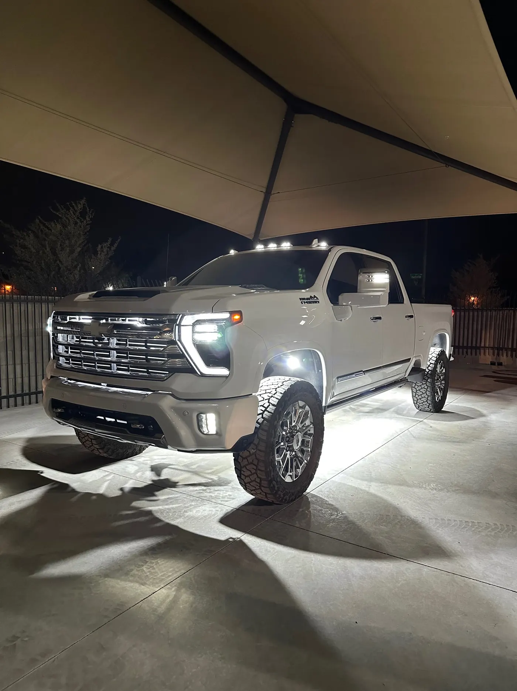

Cab And A-Pillar Lights · Mesa, AZ
Cab Lights And A-Pillar Lights, Installed In Mesa
Cab lights run along the roof of the truck. A-pillar lights mount beside the windshield and light the area beside you. We install both, plus mirror lights, at our shop in Mesa.
5.0★ from 33 reviews · installed in Mesa · kits ship anywhere
- Roof
- Cab lights
- Windshield
- A-pillar lights
- Doors
- Mirror lights

What Cab Lights Are For
Cab lights are the row of small lights along the front edge of a truck's roof. They started as clearance lights that show other drivers how wide and tall a vehicle is, and on a pickup they give the truck a wider, heavier look at night.
Some trucks come with them, and plenty don't. Adding them means mounting the lights on the roof and running power down through the cab, which is where most DIY installs go wrong.
What A-Pillar Lights Are For
The A-pillar is the post on each side of the windshield. A-pillar lights mount there and aim out to the side and down, lighting the ground beside the truck and the edge of a dirt road.
They're working lights. People use them to see while loading, towing and hooking up at night, and off-road to see what's beside the trail.
Mirror Lights
Mirror lights mount in or under the side mirrors and light the ground beside each door, which is handy in a dark driveway or job site. We install them with the same wiring standard as everything else.
The Hard Part Is The Wiring
Cab and pillar lights sit up high, and the power is down low. Getting it there cleanly means routing wire through the headliner or along the pillar trim, keeping it out of the airbag path along the pillars, sealing the roof penetrations and fusing the circuit.
Done badly, you get a wire visible inside the cab, a roof that leaks in monsoon season, or a light that stops working. That's the work we do carefully, and it's covered by our Wired Right standard below.
Which Colors Are Allowed
Cab and A-pillar lights face forward and to the side, so in Arizona they need to be amber or white. Red or blue visible from the front isn't allowed on a highway under A.R.S. 28-947. Full summary on our underglow page.
Bring Your Lights Or Have Us Supply Them
Cab and pillar lights aren't in our store, so most customers bring the lights they want. If you don't have any yet, tell us when you book and we'll supply them.
Wired Right On Every Install
Every light we put on a vehicle gets the same four things. None of them are extras, and none of them depend on who's working that day.
- Fused, every circuit
- Each circuit gets its own fuse, so a short pops a fuse instead of cooking the wiring or the light.
- Heat-sealed connections
- Every splice is sealed against Arizona heat, monsoon water and the pressure washer.
- Your lights or ours
- Bring a kit you bought from us or one you bought somewhere else, or we supply the lights.
- Tested before you leave
- We turn on every light with you at pickup, so you see it working before you drive away.
How An Install Works At Our Mesa Shop
- Book a drop-offPick the work, your vehicle and a drop-off day and time. Booking is free and takes about a minute.
- We text you to confirmYou get the slot and your install quote by text before anything is done. Labor depends on your vehicle and how many lights you want.
- Drop it off in MesaDrop-off is by appointment, Monday to Saturday, 9 to 4:30. The address comes with your confirmation.
- Pick it up litWe walk you through every light and the controls, then you drive home with it.
Builds From Our Customers


Cab And Pillar Light Questions
What are cab lights for on a truck?
They started as clearance lights that show how wide and tall a vehicle is. On a pickup they also give the truck a wider look at night.
Can you add cab lights to a truck that doesn't have them?
Yes. We mount them on the roof, run power down through the cab and seal the roof penetrations.
Are white cab lights legal in Arizona?
Lights visible from the front of a vehicle must be amber or white under A.R.S. 28-947, so white and amber cab lights fit that rule. Red or blue facing forward does not.
What are A-pillar lights?
Lights mounted on the posts beside the windshield, aimed out to the side and down. They light the area beside the truck.
Do I have to buy the lights from you?
No. Bring the lights you want, or tell us when you book and we'll supply them.